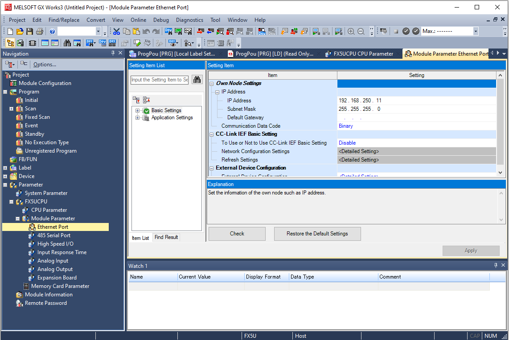
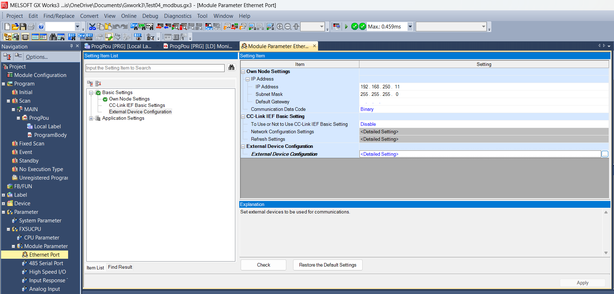
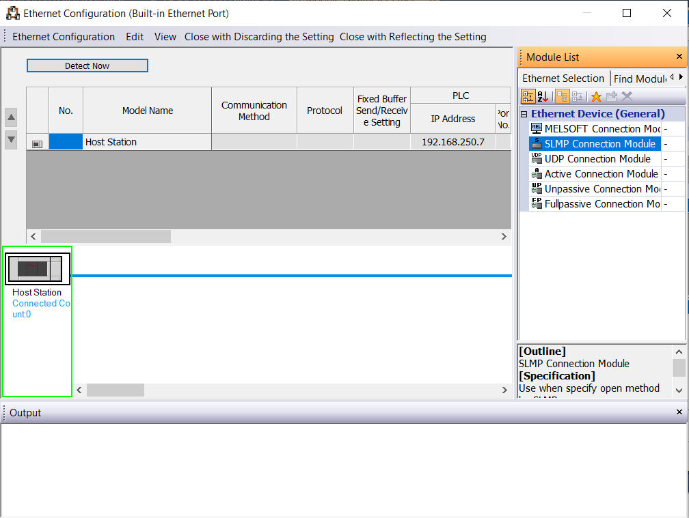
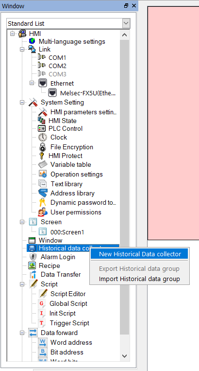
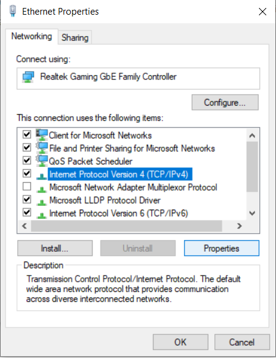
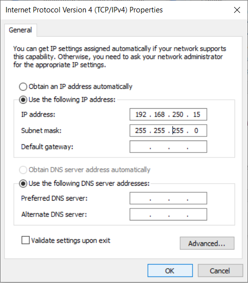
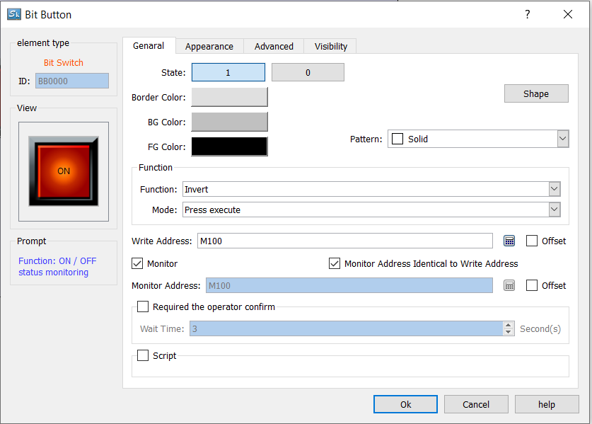
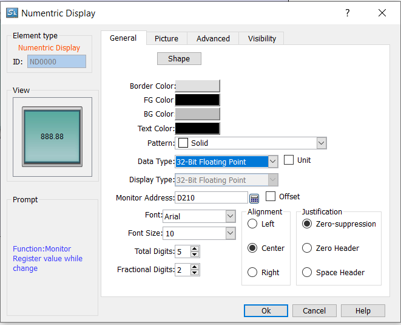
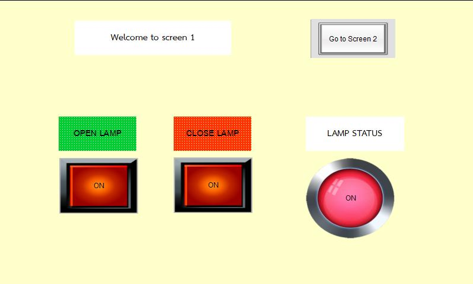
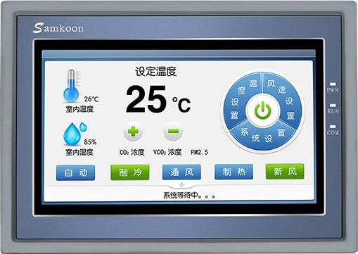

HMI Samkoon SK-070FS + FX5U
Operator ไม่ควรเดินไปกดปุ่มที่ตู้ PLC — HMI (Human-Machine Interface) คือจอสัมผัสที่ทำให้คนคุยกับเครื่องได้ผ่าน Graphical interface บทนี้พาทำ HMI ตั้งแต่ออกแบบหน้าจอ Samkoon SK-070FS เชื่อมกับ FX5U ผ่าน Ethernet
HMI ทำอะไรได้บ้าง

USE 01
ปุ่ม Start/Stop เสมือน
แตะที่หน้าจอเพื่อสั่งให้
M0 ใน PLC เป็น ON — ไม่ต้องมี Push Button จริง
USE 02
แสดงค่า Real-time
โชว์ Temperature, Pressure, Speed จาก D-register ของ PLC แบบ Live
USE 03
Set Point Input
Operator พิมพ์ค่า Set Point ใหม่บนหน้าจอ — ค่าไปเขียนใน D ของ PLC ทันที
USE 04
Alarm / History
แจ้งเตือนเมื่อค่าเกินขีด, บันทึก Event ลง SD card ของ HMI
USE 05
Trend Graph
วาดกราฟค่าตามเวลา — เห็นว่า PID stable หรือยัง
USE 06
Multi-language
สลับ TH/EN ได้ในจอเดียว — เหมาะกับโรงงานที่มีคนหลายชาติ
เตรียม Hardware
| อุปกรณ์ | รายละเอียด |
|---|---|
| HMI | Samkoon SK-070FS (7" Touch, Ethernet + RS-232/485) |
| PLC | Mitsubishi FX5U-32MT/ES |
| สายเชื่อมต่อ | Cat-5e/6 Straight cable (ผ่าน Switch) หรือ Crossover ตรง |
| ไฟเลี้ยง HMI | DC 24V (อย่าใช้ AC!) |
การเชื่อมต่อ TCP/IP

Module Parameter → Ethernet Port → Basic Settings ใน GX Works3 — ตั้ง IP, Subnet Mask, Default Gateway ที่นี่-
ตั้ง IP ของ PLC FX5U
ใน GX Works3 →
Parameter → Module Parameter → Ethernet Port→ ตั้ง IP เช่น192.168.3.250· Subnet255.255.255.0· Default Gateway ปล่อยว่าง -
เปิด MC Protocol ที่ PLC
ในหน้า Ethernet Port →
External Device Configuration→ เพิ่ม Connection ชนิด MELSOFT Connection (สำหรับโปรแกรม PLC) และ SLMP Connection หนึ่งตัว — Port:4096, Protocol: TCP
หน้า External Device Configuration— กดปุ่ม Detailed Setting เพื่อเพิ่ม HMI เป็น External Device -
Download Parameter
Online → Write to PLC→ ติ๊ก Parameter + Program → กด Execute -
ตั้ง IP ของ HMI
ในโปรแกรม Samkoon HMI Editor →
Setting → Communication Setting→ ตั้ง HMI IP192.168.3.100· Subnet ตรงกับ PLC
Tab Parameter ของ Communication Port — ตั้ง Connected equipment IP, Communication time, Overtime, Retries, Address mode -
เพิ่ม PLC Device ใน HMI Project
คลิกขวาที่
Connection→ Add → เลือก Mitsubishi FX5U Ethernet → ใส่ IP ของ PLC ที่ตั้งไว้ (192.168.3.250) · Port4096
โครงสร้าง Samkoon Project — Multi-language, Link (COM1/COM2/COM3 + Ethernet/Melsec-FX5U), System Setting, Screen, Historical data, Alarm, Recipe, Script -
ตั้ง IP ของ PC (สำหรับ Debug)
ที่ Windows → Settings → Network → Ethernet → Properties — ตั้งให้อยู่ subnet เดียวกัน

เลือก Internet Protocol Version 4 (TCP/IPv4) → Properties 
ตั้ง Use the following IP address → 192.168.250.15Subnet255.255.255.0
IP ต้องอยู่ subnet เดียวกัน
PLC
192.168.3.250 และ HMI 192.168.3.100 ต้อง 3 ตัวแรกตรงกัน
ถ้าโน้ตบุ๊คจะต่อด้วย ต้องตั้ง IP เครื่องคุณเป็น 192.168.3.10 ก็ได้
ออกแบบหน้าจอ — Tag Mapping
หัวใจของ HMI คือ Tag — เป็น "ตัวเชื่อม" ระหว่าง Element บน HMI กับ Device ของ PLC
| HMI Element | เชื่อมกับ Device PLC | Behavior |
|---|---|---|
| Bit Button (Start) | M0 | กด → M0 = ON (Momentary หรือ Latch ก็ได้) |
| Bit Lamp (Running) | Y0 | Y0 = ON → ไฟเขียวสว่างที่จอ |
| Numeric Display | D100 | โชว์ค่า D100 (เช่น Temperature × 10) |
| Numeric Input | D102 | Operator พิมพ์ Set Point → ส่งเข้า D102 |
| Trend Curve | D100 | กราฟตามเวลา |
| Alarm | M10 | M10 ON → ขึ้น popup สีแดง |
สร้างหน้าจอแรก — Step by Step
-
สร้าง Project ใหม่ใน Samkoon Editor
File → New Project→ เลือก Model: SK-070FS → กำหนดความละเอียดเป็น 800×480 -
วาง Bit Button "Start"
ลาก Bit Button จาก Toolbox → คลิกขวา → Properties →
- Address:
M0(Internal Relay ของ PLC) - Action: Momentary On (กดค้างให้ ON, ปล่อยให้ OFF)
- Label: "เริ่มทำงาน" / "Start"
- สี: เขียว (กำลังกด) / เทา (ปกติ)

หน้าตั้งค่า Bit Button — State 1/0, Function = Invert (toggle), Mode = Press execute, Write Address = M100, ติ๊ก Monitor ให้แสดงสถานะปุ่มตามค่าจริง - Address:
-
วาง Bit Lamp "Running"
Toolbox → Bit Lamp → Address:
Y0→ เลือกรูป LED Green -
วาง Numeric Display "Temperature"
Toolbox → Numeric Display →
- Address:
D100 - Data Type: Word (16-bit Signed)
- Decimal: 1 ตำแหน่ง (เพราะค่าจาก E5EC × 10)
- Unit:
°C

หน้า Numeric Display Properties — Data Type = 32-Bit Floating Point สำหรับ PM2230, Monitor Address = D210, Total Digits = 5, Fractional Digits = 2 - Address:
-
วาง Numeric Input "Set Point"
Toolbox → Numeric Input → Address:
D102→ Limits: Min 0, Max 1000 (= 100.0 °C) → ติ๊ก Keyboard popup on touch -
Compile + Download
Tools → Compile→ ถ้าผ่าน →Tools → Download via Ethernet→ ใส่ IP ของ HMI → Execute
ฝั่ง PLC — เพิ่ม Ladder รับคำสั่งจาก HMI
; เมื่อ HMI กด Start (M0) ให้ PLC ตั้ง flag M10 เก็บไว้
LD M0
SET M10 ; flag "ทำงาน"
; Run motor ตาม M10 + ไม่มี Stop + ไม่มี Alarm
LD M10
ANI M11 ; Stop จาก HMI (อีกปุ่ม)
ANI M20 ; Alarm
OUT Y0 ; Motor Contactor
; ทุก 1 วินาที อ่านค่า E5EC ผ่าน Modbus → D100
; (logic Modbus เห็นใน M07)การทดสอบ End-to-End
- ต่อสาย Ethernet PLC ↔ Switch ↔ HMI (และโน้ตบุ๊คเพื่อ Debug) — เช็คไฟ LED Link ที่พอร์ตทั้ง 2 ฝั่ง
- เปิด HMI รอ ~10 วินาทีหลังจ่ายไฟให้ HMI Boot — ถ้าหน้าจอขึ้น "Connect timeout" แปลว่า PLC IP ไม่ถูก
-
กดปุ่ม Start บน HMI
ดูที่ GX Works3 (Online) —
M0ใน Device Monitor ต้องเป็น ON ขณะกด - ดู Lamp ที่จอ ที่ Ladder เมื่อ Y0 = ON → Bit Lamp ที่ HMI ต้องสว่างเขียวด้วย
-
เปลี่ยน Set Point
แตะที่ Numeric Input → พิมพ์
30.5→ Enter → ดูใน Device Monitor — D102 ต้อง = 305
ดู Animation การกดที่หน้า HMI
Samkoon Editor มี Off-line Simulator ที่
Tools → Simulator
— ทดลองหน้าจอบน PC ก่อนส่งเข้า HMI จริงได้
เอกสารและรูปประกอบ
ตัวอย่างหน้าจอจริงที่นิสิตจะสร้างได้ในบทเรียนนี้:

